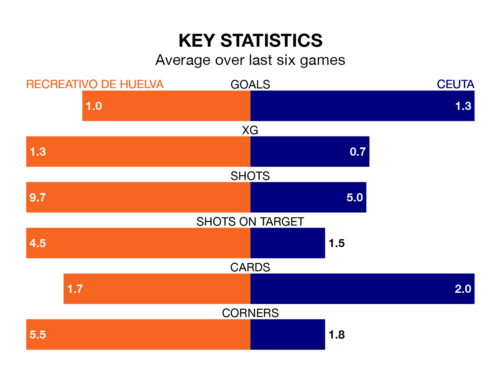

Ceuta travel to Recreativo de Huelva on early Sunday in Primera Division RFEF Group 2.
The visitors come into the game on the back of a draw in their last match, having tied with Córdoba 1-1 at home.
Recreativo de Huelva, meanwhile, lost their last match, 2-0 against Málaga CF.
With Rubén Ramos González between the sticks, Recreativo de Huelva can rely on one of the league's safest pair of hands. He has kept 11 clean sheets in his 22 appearances this season, and no 'keeper has prevented the opposition scoring more often in Primera Division RFEF Group 2.
In Ceuta's net, Pedro López Galisteo has nine clean sheets in 23 games.
With 25 goals in 24 games so far this season, the hosts are scoring at below the league average rate with 1.0 goals per game. But they are conceding fewer than average too, letting in 22 goals at a rate of 0.9 per game.
The away side, meanwhile, are average scorers, with 1.1 goals per game. They have conceded 1.0 goal per game.
Recreativo de Huelva are fifth in the table after 24 games, of which they have won 11 and drawn seven, earning 40 points.
Ceuta are four places behind Recreativo de Huelva in ninth, with eight wins and 10 draws putting them on 34 points.
The home team are in mixed form in Primera Division RFEF Group 2, with two wins and two draws from their last six games.
With two wins and three draws over that period, Ceuta's form is slightly better – they have taken nine points from 18, compared to Recreativo de Huelva's eight.
Updated: 10:08 (UTC), 23/02/24